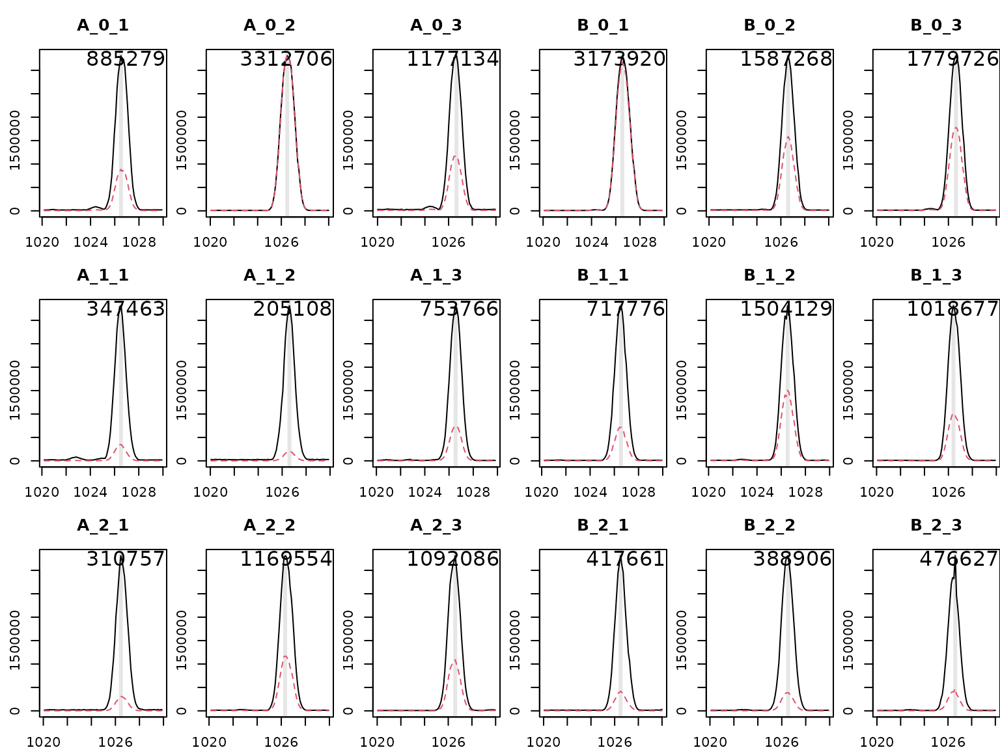
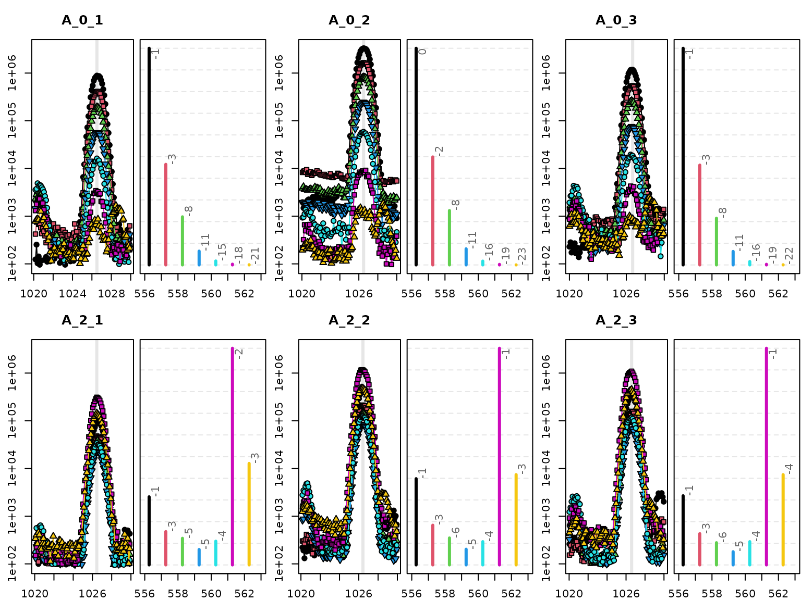
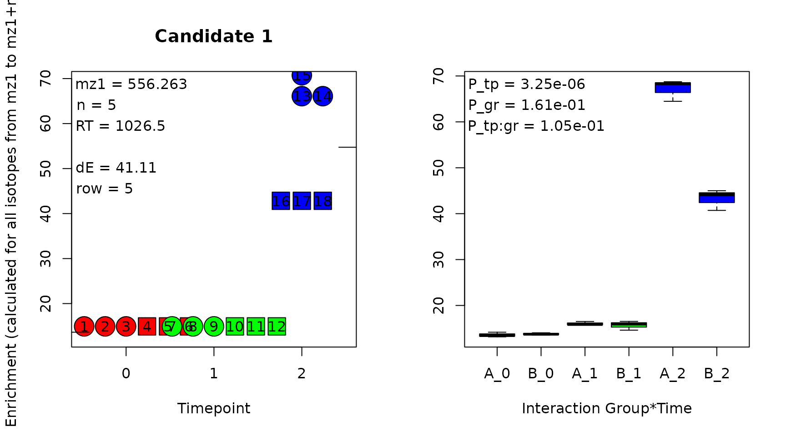
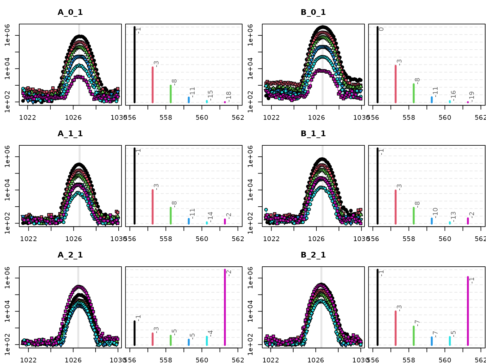
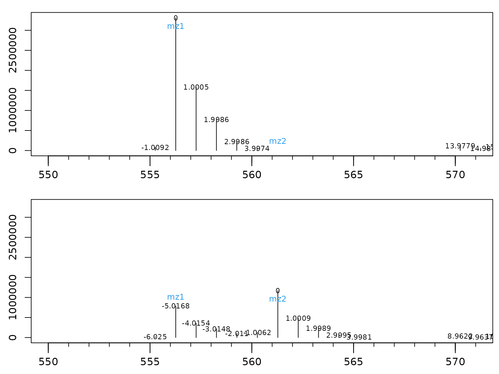

HiResTEC aims to find and validate measurement signals
in mass spectrometry data that indicate the incorporation of a tracer
molecule,
i.e.
which is a common approach in metabolic flux analysis.
To this end, at least 3 measurement files containing non-labeled samples and 3 measurement files containing labeled samples need to be available. This vignette will demonstrate the general workflow on a set of 18 samples from two groups and three time points.
Let’s start with loading the example data set provided with the package and setting up a sample table describing these files.
raw <- HiResTEC::raw
sam <- data.frame(
"gr" = rep(rep(c("A","B"), each=3), 3),
"tp" = rep(0:2, each=6),
"rep" = rep(1:3,6)
)
sam[,"ids"] <- apply(sam, 1, paste0, collapse="_")
head(sam)
#> gr tp rep ids
#> 1 A 0 1 A_0_1
#> 2 A 0 2 A_0_2
#> 3 A 0 3 A_0_3
#> 4 B 0 1 B_0_1
#> 5 B 0 2 B_0_2
#> 6 B 0 3 B_0_3It contains 18 measurements stored in a list as
xcmsRawLike objects. The samples belong to two groups
(annotated as A and B in column
gr) and were taken at three different time points
(annotated as 0, 1 and
2 in column tp). We can plot the base peak
chromatograms (BPCs) for these files to observe that they contain only a
small retention time window (appr. 10s) and a limited mass range.
length(raw)
#> [1] 18
class(raw[[1]])
#> [1] "xcmsRawLike"
#> attr(,"package")
#> [1] "CorrectOverloadedPeaks"
raw[[1]]@mzrange
#> [1] 520.1361 619.6102
bpc <- lapply(raw, HiResTEC::getMultipleBPC)
HiResTEC::plotBPC(bpc, type = "bpc", mfrow = c(3,6), ids = sam[,"ids"])
There appears to be a peak at rt = 1026.5s in all files. Let’s deconvolute the ion intensities at this rt and plot the spectrum.
rt <- 1026.5
s <- HiResTEC::DeconvoluteSpectrum(dat = raw, rt = rt)
InterpretMSSpectrum::PlotSpec(x = s)The base peak is observed at m/z = 556.263. We can extract the mass isotopomer distribution (MID) of m/z 556.263 and its isotopes for all files. For better visibility we omit plotting the intermediate time point 1 and group B.
mz <- 556.263
mz_dev <- 0.4
bpc <- lapply(raw, function(x) { HiResTEC::getMultipleBPC(x = x, mz = mz + c(0:6)*1.003355, mz_dev = mz_dev) })
flt <- sam[,"tp"] %in% c(0, 2) & sam[,"gr"] == "A"
HiResTEC::plotBPC(bpc[flt], mfrow = c(2,3), ids = sam[flt,"ids"])
The figure shows that the MID changes systematically between
replicate samples of time points 0 and 2. To test hypotheses of m/z
pairs indicating label incorporation HiResTEC needs a peak
list. You can use any peak picking algorithm to get such a peak list.
HiResTEC accepts an xcmsSet result as input or
alternatively a numeric matrix containing mz and
rt information in the first two columns followed by peak
intensities of all samples.
We can prepare such a peak list for the example data using the maxima from the BPCs we just extracted.
int <- sapply(bpc, function(x) { x[attr(x, "maxBPC"),] })
colnames(int) <- sam[,"ids"]
xg <- data.frame("mz" = as.numeric(rownames(int)), "rt" = rep(rt,7), int, row.names = NULL)
xg[,1:8]
#> mz rt A_0_1 A_0_2 A_0_3 B_0_1 B_0_2 B_0_3
#> 1 556.2630 1026.5 885279 3312706 1177134 3173920 1587268 1779726
#> 2 557.2664 1026.5 410974 1651166 542420 1539848 749420 881862
#> 3 558.2697 1026.5 196540 831255 253851 762537 368239 440807
#> 4 559.2731 1026.5 56425 246355 73354 214614 103306 124894
#> 5 560.2764 1026.5 16214 58556 18540 51556 24568 31298
#> 6 561.2798 1026.5 3119 8376 3447 7303 5148 5453
#> 7 562.2831 1026.5 767 1035 886 1134 798 1007Finally, we can apply the two main functions of
HiResTEC. First, we evaluate our peak list to identify
interesting m/z pairs.
preCL <- HiResTEC::EvaluatePairsFromXCMSSet(xg = xg, tp = sam$tp, gr = sam$gr, dmz = 0.04)
head(preCL[order(preCL[,"P"]),3:7])
#> mz1 mz2 P dR dRT
#> 17 559.2731 561.2798 5.474917e-13 87.25 0
#> 20 560.2764 562.2831 3.685086e-10 75.74 0
#> 18 559.2731 562.2831 7.766381e-10 80.84 0
#> 14 558.2697 561.2798 2.303710e-08 83.10 0
#> 19 560.2764 561.2798 2.935232e-08 74.93 0
#> 10 557.2664 561.2798 5.373940e-07 75.64 0The function finds all relevant pairs within the specified parameters (allowed mass difference, allowed rt window, see help file of EvaluatePairsFromXCMSSet() for details) and tests each pair using an ANOVA model based on the group and time point information of each sample.
Above, we sorted the output according to the P-value (column
P). We could also have sorted according to column
dR which gives the change in the intensity ratio between
the first and the last time point specified. However, the lowest P-value
is obtained for an m/z pair {559, 561} within the MID of our peak. The
correct solution would be m/z pair {556, 561}.
The task to pick the best candidate, to apply rigorous quality control and avoid redundancy in the final result is achieved by the second step of the evaluation, where we cross check the preliminary candidate list preCL against the raw data.
finCL <- HiResTEC::EvaluateCandidateListAgainstRawData(
x = preCL, tp = sam$tp, gr = sam$gr, dat = raw, dmz = 0.04, rolp = "all"
)EvaluateCandidateListAgainstRawData() will result in a loooong list in a real non-targeted experiment. However, as we only tested the MID of a single peak and decided to remove redundancy (parameter rolp), only a single candidate remains.
This candidate can be exported to Excel, and can be checked by generating quality control plots in a PDF using function GenerateQCPlots(). Four QC plots are generated per candidate. First, the enrichment in all samples is depicted.

The enrichment is estimated based on the assumption that n, the difference between mz1 and mz2 or the number of incorporated tracer atoms, is equivalent to the total number of tracer atoms in the molecule. This assumption is generally incorrect, but the obtained values are a good approximation for the amount of labeling.
Time points are color coded and different plotting symbols are used for groups. Individual samples can be identified in the left subplot due to their number from the sample list. The annotation ‘dE’ in the left subplot provides the maximum difference in enrichment between samples. The P-values annotated in the right subplot are obtained from the ANOVA result. In short, if ‘dE’ is large and ‘P_tp’ is small, it is worth looking at the other QC plots.
The second QC plot provides the BPCs as shown before. Let’s limit this figure this time to the first replicate of each time point and group.

Numerous things can be checked in this plot. Obviously the peak shape of all masses should be nice and co-located. Note! that the intensities are depicted log10-transformed to enhance small signals. The spectra on the right hand subplots are not log10-transformed to emphasize differences between time points. Each spectrum depicts the intensities from the scan in the left subplot indicated by the grey line, usually the peak center. In the spectra, one should confirm that the ratio of mz1 (black) and mz2 (purple) is really changing. This sounds trivial, but is sometimes not the case if errors inpeak picking or deconvolution occurred.
Also, the small numbers at the top of each mass intensity are very informative. The indicate the difference of the measured mass from the theoretical mass in mDa. The theoretical mass of a M+5 isotope in a tracer experiment using would be calculated by (because 1.0034 is the difference between and ). In GC-APCI-MS (which this example is coming from), analytes are derivatized before analysis, often using TMS groups (Tri-Methyl-Silyl). TMS contains silicon and silicon isotopes have a different mass difference than carbon. This leads to the effect of negative mass deviations in the above spectra for higher isotopes in non labeled samples, as here silicon determines the mass and not carbon. In labeled samples (tp=1 and tp=2), carbon starts to determine the mass deviation instead of silicon.
In consequence, observing a strong negative mass deviation in tp=0 samples for mz2 (purple) and a minor mass deviation in labeled samples is a strong indicator for successful tracer incorporation.
The third and fourth QC plots provide spectra deconvoluted from raw data. These should be checked to confirm if the candidate m/z pair is representative for the compound (is it the base peak? is it the likely M+H?).

For those candidates looking promising, one can use the
InterpretMSSpectrum package to identify likely sum formulas
for each compound, and use the CorMID package to correct
the intensities obtained by HiResTEC for natural
abundance.
To demonstrate this shortly, InterpretMSSpectrum
suggests
C22H46N5O4Si4 as
a possible sum formula.
fml <- "C22H46N5O4Si4"
attr(fml, "nbio") <- 5
# re-extract the BPCs including [M+]
mz <- finCL[[1]]$mz1
rt <- finCL[[1]]$rt
bpc <- lapply(raw, function(x) {
HiResTEC::getMultipleBPC(x = x, mz = mz + c(-1:6)*1.003355, mz_dev = 0.04, rt = rt)
})
# BPCs show about 2.5% [M+] intensity, define r accordingly
r <- setNames(c(0.975, 0.025), nm = c("M+H", "M+"))
int <- sapply(bpc, function(x) { x[attr(x, "maxBPC"),] })
rownames(int) <- paste0("M",-1:6)
colnames(int) <- sam$ids
mid <- apply(int, 2, function(x) {
CorMID::CorMID(int = x, fml = fml, r = r)
})
# show mean group corrected MID
sapply(split(as.data.frame(t(mid)), interaction(sam[,"gr"], sam[,"tp"])), function(x) {
round(apply(x,2,mean),1)
})
#> A.0 B.0 A.1 B.1 A.2 B.2
#> M0 99.2 99.2 96.4 97.1 24.7 55.7
#> M1 0.8 0.8 0.0 0.0 0.0 0.0
#> M2 0.0 0.0 0.0 0.0 0.8 0.0
#> M3 0.0 0.0 0.0 0.0 1.0 0.3
#> M4 0.0 0.0 0.0 0.0 3.6 1.8
#> M5 0.0 0.0 3.6 2.9 69.8 42.2As can be seen from the mean corrected MID per group, the estimate of
enrichment shown in the QC plots above (70% and 40% at tp 2 for group A
and B respectively) is pretty close to the results obtained by
CorMID.
Have fun, using HiResTEC and, in the likely event that
something does not work as expected, let me know.